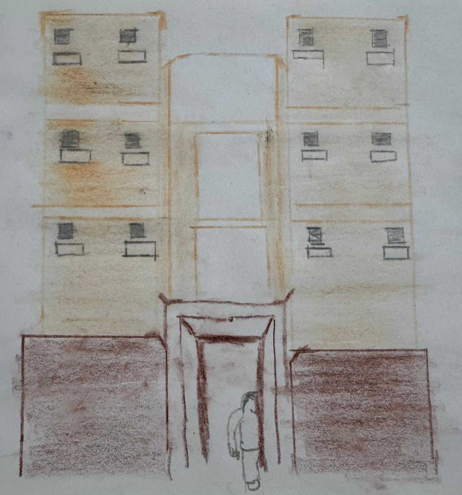

A survey conducted by the housing board in 1981 showed that 82.8% of the HDB flat residents felt safe leaving the flat unattended during the day. (Reference: The Straits Times, 1 Jun 1982)
A survey conducted by the housing board in 1981 showed that 82.8% of the HDB flat residents felt safe leaving the flat unattended during the day. (Reference: The Straits Times, 1 Jun 1982)
National Development minister Desmond Lee said to ensure fairness in the market, the government may use a method to recover some of the additional subsidy given to flats in prime locations.
In 2020, the number of flats transacted for at least one million dollars was 82.
The number of resale HDB transactions in 2020 was 24,748.
Only 0.35 percent of all the transactions done in that year were valued at one million dollars and above.
It is not confirmed that the first owner of a prime location HDB flat can sell the flat above one million dollars. Being able to own an asset which appreciates in value is fortunate for that flat owner. It shouldn’t be that due to some displeasure, the Housing Board has to deny everyone a chance of having such an asset.
Setting an income ceiling and reacquiring back subsidies for prime location flats may only shift the problem from location to another. The root of the problem is not addressed.
The measures proposed for regulating the prices of resale HDB flats in prime locations only targets future housing projects. The effects of the proposed measure will likely take effect after more than 10 years. Prime location flats that have already been completed will remain transacted at the market at unconventional prices. If the housing board wants to promote occupancy and regulate market speculation, it is opined that length of ownership of a flat is a better measurement tool than flat location. This is because choosing to live in a prime location does not necessarily mean that the people choosing those flats want monetary profit from the good location.
